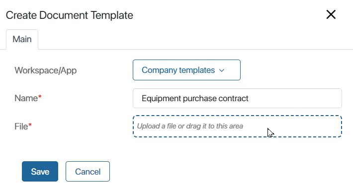
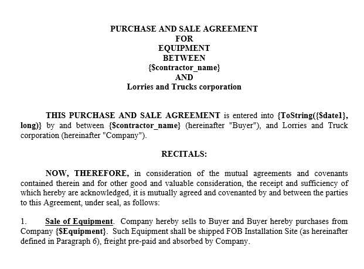
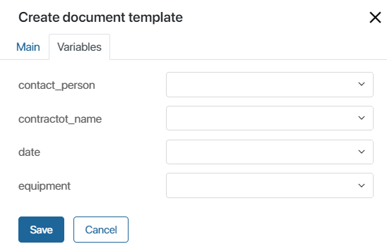
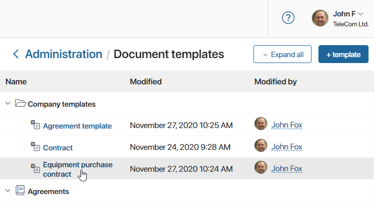
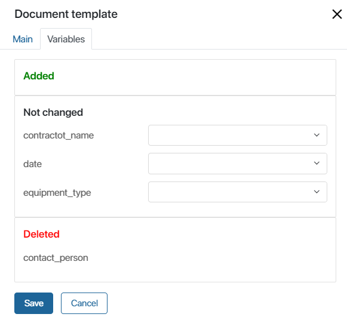

A document template is a file that contains a certain set of variables. It can have the .doc, .docx, .xls, .xlsx or .rtf format The values of these variables are automatically filled in with the data used in the system. In BRIX, you can upload document templates such as contracts, reports, and agreements and use them in business processes.
As a result, you have a document that includes, for example, the contractor’s name, contract signing date, and the contract's price. Templates make document management faster and allow you to avoid human mistakes, for example, writing incorrect banking details.
Add a template
You can create document templates for business processes within the company, workspace, or app.
Please note that templates added to a workspace or an app can only be used in business processes created in the same workspace and app.
начало внимание
Only users included in the Administrators group can add and edit templates.
конец внимание
- You can create a template:
- For the Company: go to Administration > Document Templates.
- For a workspace or an app: click the gear icon next to its name and select Document Templates.
- You will see a page with the list of available templates. To add a new one, click +Template.
- In the creation window, specify the document name and add the template file.

The template file must contain variables that will be filled with data from the process in the future. For more information about variables and constructs used in templates, see the Template syntax article.
- Save the template.
Use the document template
Let’s consider an example where you need to create an equipment purchase contract template for the Sales workspace. The template should include the name of the contractor, the name of the contact person, the type of equipment, the contract number, and the date of signing.
Create the contract in a text editor and add the corresponding variables.

Save the contract to your computer and add it to the Sales workspace.
When you upload the template, BRIX extracts the variables and displays them on a form where you can assign a specific data type to each variable.

If you leave this field empty, then later in a business process you will be able to specify any type. If you select a specific type now, you will not be able to change it in the process.
After having specified the data types for your variables, click Save. Now you can use this template in a process, for example, in the Fulfill purchase order business process.
You can read more about using document templates in business processes in the Generate from Template article.
Edit a template
You can edit a template: modify the template's name, replace the file and change the assigned variable types. To do that:
- On the Document templates page, click the file name in the templates list.

- In the opened window on the Main tab, you can:
- Change the name of the template.
- View the content of the file by clicking on its name. The opened document will be read-only.
- Delete a template by clicking the trash can icon to the right of its name.
- Add a new template if you have deleted an existing one.
- If variables have changed in the new file, you will see a notification. Go to the Variables tab, where the list of added and deleted variables is displayed. Then specify the type of variables added or change the type of existing variables.

- Click Save to apply changes to your template.
Found a typo? Select it and press Ctrl+Enter to send us feedback